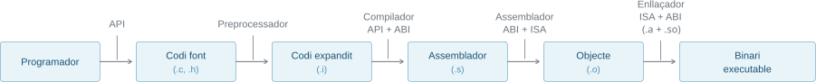
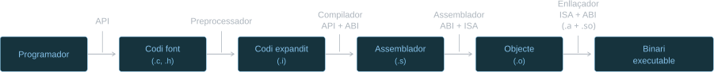
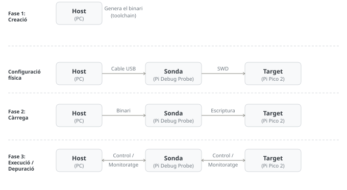
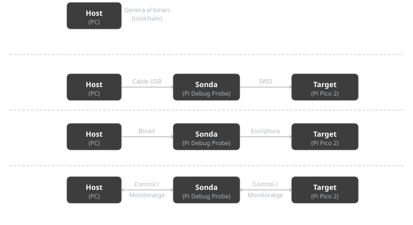
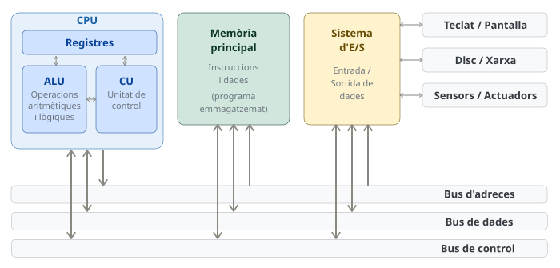
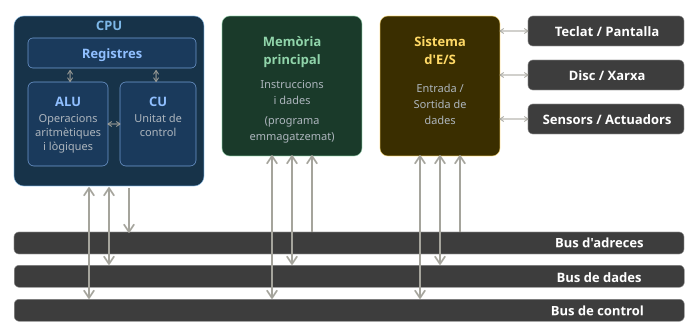

Tema 1: Introducció
1.1 La gestió de la complexitat: Capes i interfícies
Un computador és un sistema d’una complexitat extraordinària, però que, en el seu nivell més fonamental, només és capaç d’executar operacions aritmètiques, lògiques i de control elementals. La distància conceptual que separa aquestes instruccions bàsiques de les aplicacions tan sofisticades actuals és tan gran que és impossible dissenyar qualsevol sistema operatiu (SO) o programa modern que interactuï directament amb els components físics del processador.
1.1.1 Nivells d’abstracció
Per gestionar aquesta distància conceptual tan gran i fer viable el disseny de sistemes computacionals, s’aplica el mecanisme de l’abstracció. Aquesta estratègia permet estructurar el conjunt del computador, entès com la unió de maquinari (hardware) i programari (software), en una jerarquia de nivells clarament diferenciats. En aquest model, cada nivell ofereix una descripció simplificada del nivell immediatament inferior, ocultant-ne la complexitat interna i definint interfícies precises que permeten la comunicació entre els diferents components del sistema.
- Nivell de components físics: Constitueix el fonament material del computador. Inclou els elements de l’electrònica de base com transistors, resistències, condensadors, díodes, interconnexions físiques, etc.
- Nivell d’unitats funcionals i lògica digital: En aquest estadi s’agrupen els components per formar portes lògiques, descodificadors, sumadors, comparadors, busos, etc. Aquest nivell d’abstracció és l’objecte d’estudi de l’assignatura Introducció als computadors (IC).
- Nivell de l’arquitectura del repertori d’instruccions (ISA): És la frontera crítica entre el maquinari i el programari. Estableix, entre d’altres, el conjunt d’instruccions que la unitat central de processament (Central Processing Unit, CPU) és capaç d’executar, el model de memòria i els registres visibles per al programador. A EC, la ISA de referència és RISC-V (vegeu EC 1).
- Nivell de microarquitectura: És la implementació específica d’una ISA. Defineix com s’organitzen i s’interconnecten les unitats funcionals (com l’ALU, els busos o les memòries cau) i com es dissenya el camí de dades (datapath) per executar les instruccions. Dos processadors poden implementar la mateixa ISA i comportar-se de manera idèntica per al programador, però tenir microarquitectures completament diferents (per exemple, Intel i AMD amb x86).
- Nivell de sistema (baix nivell): És l’àmbit d’estudi principal d’Estructura de computadors (EC). Aquí el programari té un control directe sobre els recursos definits per l’ISA. Dins d’aquest nivell trobem:
- Llenguatge màquina: Instruccions codificades en binari que la unitat de control del processador interpreta i executa.
- Llenguatge d’assemblador: Una representació simbòlica del llenguatge màquina que utilitza mnemònics. Un programa anomenat assemblador s’encarrega de fer la traducció directa a codi binari.
- Nivell d’aplicació (alt nivell): Nivell on es desenvolupa el programari d’usuari utilitzant llenguatges d’alt nivell com el C (el de referència a EC), C++ o Rust. Un programa anomenat compilador tradueix el codi d’alt nivell (codi font) a instruccions d’assemblador. L’abstracció d’aquest nivell permet al programador gestionar dades i algorismes sense haver de conèixer els detalls de la microarquitectura o el mapa de registres específic.
- Nivell d’usuari: Representa el punt de contacte amb l’usuari final, que interacciona amb el sistema mitjançant aplicacions i la interfície d’usuari (UI), ja sigui a través de línies de comandes o d’entorns gràfics.
1.1.2 Interfícies: Els contractes del sistema
L’abstracció només és efectiva si les interfícies (fronteres) actuen com a contractes rígids que cap de les parts pot violar sense trencar la funcionalitat del sistema. En un entorn allotjat (hosted) amb SO —el cas més habitual, per exemple el de Programació I (PRO1)—, n’hi ha tres:
Application Programming Interface (API): Contracte a nivell de codi font. Garanteix la portabilitat del programari entre diferents sistemes si es respecten els estàndards (com ISO C o POSIX). Defineix com s’ha d’escriure el codi.
Application Binary Interface (ABI): Contracte a nivell de binari. És el protocol que defineix com interactuen les peces ja compilades. Estableix les convencions de crida (pas de paràmetres per registres), la gestió de la pila (stack) i el format dels fitxers executables. L’ABI depèn del binomi processador-SO (ex: GNU/Linux sobre RISC-V). Defineix com parlen els binaris.
Instruction Set Architecture (ISA): Contracte a nivell de maquinari. Defineix el vocabulari d’instruccions, els registres físics i el model de memòria. Defineix què sap fer el processador.
A EC, s’assumeix que es treballa directament sobre el processador, si no s’especifica explícitament el contrari. Per tant, recursos vistos en aquest tema, com ara APIs o SO, no estan disponibles per defecte.
El RARS és una excepció important d’aquesta assumpció, ja que disposa d’un simulador de syscall, un recurs bàsic de qualsevol SO, el qual es fa servir en algunes sessions de laboratori.
1.2 El cicle de vida del programa: Generació vs. Execució
Per entendre la relació entre les interfícies (API, ABI, ISA), cal diferenciar dues etapes totalment separades en el temps i, sovint, en l’espai (màquines diferents o, fins i tot, arquitectures diferents).
1.2.1 El flux de generació: La visió del programador
El procés de transformació d’una idea abstracta en un fitxer executable no és un pas directe, sinó una cadena de muntatge (toolchain) altament coordinada on intervenen diferents eines de sistema. Aquest flux, que va des de l’escriptura del codi fins a la generació del binari executable, es pot desglossar en quatre (més una) etapes fonamentals on les interfícies API, ABI i ISA (vegeu Secció 1.1.2) actuen com a garanties de compatibilitat:
- Desenvolupament: El programador escriu el codi font (
.c,.h) d’acord amb l’API. - Preprocessat (
cpp): El preprocessador és el primer a actuar. Neteja el text i resol directives (com#includeo#define) per generar el codi expandit (.i), una versió completa però encara en llenguatge d’alt nivell. - Compilació (
cc1): El compilador tradueix la lògica de l’alt nivell a un llenguatge de baix nivell anomenat assemblador (.s). En aquest punt, el compilador actua com a pont: ha d’entendre l’API escrita pel programador i, alhora, començar a aplicar les regles de l’ABI per determinar com s’estructuraran les dades en memòria. - Assemblat (
as): L’assemblador agafa el fitxer de text (.s) i el converteix en codi objecte (.o). Aquí és on l’ISA pren protagonisme, ja que el programari s’ha de traduir a les instruccions específiques del processador diana (x86, ARM, etc.), mantenint l’estructura binària que dicta l’ABI. - Enllaçat (
ld, linking): L’enllaçador és el pas final i crític de síntesi. La seva funció és combinar el codi objecte generat pel programador amb les biblioteques del sistema, tant estàtiques (.a) com dinàmiques (.so). Per fer-ho, l’enllaçador ha de tenir un coneixement profund de l’ISA (per resoldre salts i adreces de memòria) i de l’ABI (per assegurar que totes les peces «parlen» el mateix llenguatge binari), i produeix l’executable final llest per ser carregat a la memòria.


La GCC toolchain és l’estàndard de facto de la indústria per a sistemes oberts. És un projecte de codi obert que ha evolucionat durant dècades, oferint un suport ampli per a múltiples arquitectures i estàndards de llenguatge.
La Clang toolchain és una alternativa moderna que ha guanyat popularitat per la seva arquitectura modular i millor suport per a noves característiques del llenguatge C/C++.
1.2.2 El flux d’execució: La visió del processador
Un cop obtingut el binari, aquest s’ha d’executar. El camí que segueixen les dades depèn de l’entorn de treball:
1.2.2.1 Entorn allotjat (hosted)
És el model d’un PC convencional. El binari no és autònom:
- El sistema operatiu carrega el binari a la memòria.
- El binari s’executa i, quan necessita interactuar amb l’exterior, fa una crida al sistema (
ecall), seguint les convencions de l’ABI. - L’SO rep la petició i utilitza la ISA (instruccions privilegiades) per gestionar el maquinari.
1.2.2.2 Entorn autònom (bare-metal)
És el model dels sistemes encastats (embedded systems) simples i el d’EC:
- El binari es carrega directament a la memòria del processador (o via simulador).
- El programa té el control total i executa les instruccions de la ISA sense intermediaris.
- Aquí l’ABI no serveix per parlar amb un SO, sinó per garantir que el codi és compatible amb les biblioteques i per interactuar amb el simulador (per exemple, mitjançant
ecallper imprimir per consola).
1.2.3 El rol de les interfícies
Les interfícies defineixen el binari durant la generació, però també regeixen el seu comportament durant l’execució. Són el contracte que garanteix que el binari i la màquina (o simulador) s’entenguin en temps real.
1.2.3.1 Les interfícies en la «Visió del Programador» (Generació)
Des del punt de vista del programador, les interfícies actuen com a normes de construcció.
- API: El programador escriu
printf(). El compilador sap què vol dir perquè l’API ho defineix. - ABI: El compilador decideix posar el primer argument a
a0perquè l’ABI de RISC-V ho mana. - ISA: El compilador tradueix la suma al codi màquina
0x00B50533perquè l’ISA ho especifica.
1.2.3.2 Les interfícies en la «Visió del Processador» (Execució)
És al processador on les interfícies esdevenen el protocol de funcionament real:
- L’ABI en execució: Quan el programa fa un
ecall, el processador s’atura i «mira» el registrea7. El simulador (o l’SO) interpreta aquest número basant-se en l’ABI. Si l’ABI diu que el codi1és «imprimir», el sistema imprimeix. L’ABI és el que permet que el binari i l’entorn es basin en la mateixa «llengua» mentre el programa s’executa. - L’ISA en execució: És el moment de la veritat. La unitat de control del processador llegeix els bits del binari. Si aquests bits no coincideixen amb l’ISA del maquinari, el processador no sabrà quines portes lògiques obrir i el sistema fallarà (instrucció il·legal).
La Taula 1.1 resumeix l’impacte que tenen els canvis a nivell de cada una de les interfícies.
| Si canvia la… | El codi s’ha de… | Perquè… |
|---|---|---|
| API | Modificar el codi i recompilar | Han canviat les interfícies de les funcions d’alguna biblioteca usada. |
| ABI | Recompilar | El binari ha de canviar com gestiona els registres o les crides al sistema. |
| ISA | Recompilar | El processador nou no entén els «0s i 1s» de l’antic. |
1.2.4 La dualitat de l’entorn: host vs. target
En el desenvolupament de sistemes de baix nivell i, especialment, en els encastats, on el dispositiu que executarà el codi sol mancar dels recursos necessaris per allotjar eines de programació, cal diferenciar clarament entre dos ordinadors que juguen rols diferents:
- Màquina amfitriona (host):
- Què és: L’ordinador que utilitza el programador per escriure el codi (per exemple, un PC de la facultat o un portàtil).
- Arquitectura: Habitualment x86-64 o ARM.
- Funció: Executar l’editor de text i el compilador. El compilador és un programa «nadiu» del host que s’encarrega de «fabricar» el binari.
- Màquina destí (target):
- Què és: El sistema on realment s’executarà el programa final.
- Arquitectura: A EC, la ISA de destí és RISC-V.
- Funció: Executar el binari generat pel host. En aquest cas, el target no és una placa física (inicialment), sinó un simulador (com el RARS) que reprodueix el comportament d’una CPU RISC-V sobre el host.
1.2.4.1 Per què és important aquesta separació?
- Incompatibilitat de binaris: Un binari generat per a RISC-V és una seqüència de bits inintel·ligible per a un processador Intel/AMD. Si s’intenta executar-lo directament al terminal de Linux/Windows, el sistema operatiu advertirà que el format de l’executable és invàlid.
- El paper del simulador: El simulador actua com una «bombolla» de l’arquitectura de destí. El simulador s’executa en el host (x86), però l’interior de la bombolla entén la ISA i l’ABI de RISC-V.
- Portabilitat del codi font: El codi en C és l’únic element que «viatja» entre ambdós mons. Es pot compilar el mateix fitxer
.cper al host (per provar la lògica) o fer cross-compilation per al target.
1.2.4.2 Compilació creuada (cross-compilation)
S’utilitza un entorn hosted, per exemple, amb arquitectura x86 i sistema Linux, per generar un binari destinat a una arquitectura diferent (per exemple, RISC-V). El compilador s’executa en el host però genera codi per al target.
La RISC-V GNU Compiler Toolchain permet crear codi des de diversos hosts GNU/Linux o macOS per a gran quantitat d’ISAs RISC-V.
Un cop obtingut al host, el binari es carrega al target mitjançant un cable i un protocol apropiat.
1.2.4.3 Depuració creuada (cross-debugging)
La depuració s’ha de fer en l’entorn del target, el qual pot ser:
Amb simulador: Un programa (el simulador) en un PC recrea per programari el comportament dels registres i la memòria de la CPU de destí i fa visible els efectes sobre els components del maquinari simulat a través d’interfícies gràfiques. És el cas del RARS, el simulador d’EC.
Amb target real: El binari s’envia des del host a través d’una placa de desenvolupament (debugger) al xip real (el target). D’aquesta manera, el codi s’executa en l’entorn real, amb els seus temps de resposta i perifèrics físics (LEDs, sensors, motors).
1.2.5 El llenguatge C: El pont de l’abstracció
A EC, el llenguatge C és l’eina de referència perquè ocupa una posició estratègica única: és prou «alt» per ser llegible, però prou «baix» per reflectir fidelment el que passa a la ISA.
1.2.5.1 Origen i dualitat
Creat per Dennis Ritchie als laboratoris Bell (anys 70) per reescriure el sistema operatiu UNIX, el C va néixer amb una missió: substituir el llenguatge d’assemblador.
- Com a llenguatge d’alt nivell (API): Ofereix estructures de control (
if,while) i tipus de dades que permeten programar sense pensar en processadors concrets. - Com a «assemblador portàtil» (ABI/ISA): Permet manipular directament adreces de memòria mitjançant punters. Una variable en C té una correspondència quasi directa amb una posició de memòria o un registre de l’ISA.
1.2.5.2 Control del maquinari amb C
A diferència de llenguatges com Java o Python, el C permet accedir a capes molt més pròximes al maquinari:
- Gestió de memòria: Mitjançant els punters, el programador decideix exactament on resideixen les dades. Això és vital en sistemes bare-metal per accedir a registres de control del maquinari que estan «mapats» en memòria (Memory-Mapped I/O).
- Alineament i estructures: El C permet definir com s’empaqueten els bits (estructures
struct). L’ABI determina com s’ordenen aquests bytes en memòria, i el C té les eines per respectar aquest ordre. - Eficiència: Un bon compilador tradueix el C a ISA d’una manera extremadament eficient.
1.2.5.3 La dependència de l’entorn
Tot i que el codi C és portable, el seu comportament final depèn de l’ABI:
- La mida d’un
int(16, 32 o 64 bits) no l’estableix el llenguatge, sinó l’ABI del sistema on s’executarà el programa. - El pas de paràmetres a les funcions el gestiona el compilador seguint l’ABI, però el programador de C ha de ser conscient d’aquestes regles quan interactua amb codi escrit directament en assemblador.
1.2.6 Traducció: De C al llenguatge de màquina
El procés de traducció no és un pas únic, sinó una cadena de transformacions (coneguda com a toolchain) on cada etapa acosta el codi una mica més al maquinari (vegeu les quatre etapes a Secció 1.2.1 i la visió general a Secció 1.1.2 i Figura 1.1). El compilador de referència a EC és el GCC, amb les eines cpp (preprocessat), cc1 (compilació), as (assemblat) i ld (enllaçat).
1.2.6.1 El llenguatge d’assemblador: La visió de l’ISA
La compilació és rellevant a EC, ja que l’assemblador és la representació textual de la ISA.
RV32I
En aquest exemple, el compilador ha seguit les regles de l’ABI per decidir que els paràmetres a i b es passen a través dels registres a0 i a1 (registres d’argument). La instrucció add és una operació definida per la ISA de RISC-V que realitza la suma i en deixa el resultat a a0 (registre de retorn). Finalment, la instrucció ret és una pseudoinstrucció que s’expandeix a jalr x0, 0(ra): un salt indirecte a l’adreça de retorn continguda al registre ra.
Un microcontrolador és un sistema informàtic complet integrat en un sol xip de silici, dissenyat específicament per controlar tasques concretes en sistemes encastats. A diferència d’un microprocessador convencional (com el d’un PC), que només conté la CPU i necessita components externs per funcionar, el microcontrolador incorpora dins del mateix encapsulat la memòria (RAM i Flash), els circuits de rellotge i una gran varietat de perifèrics d’entrada/sortida (com GPIO, UART o ADC).
El RP2350 és un microcontrolador de Raspberry Pi (RP) de tipus System-on-chip (SoC) que inclou dos nuclis ARM Cortex-M33 i dos nuclis Hazard3 basats en la ISA RISC-V. El programador pot triar quina arquitectura utilitzar en temps de compilació.
La Raspberry Pi Pico 2 és una placa de desenvolupament basada en el xip RP2350. Com a plataforma d’experimentació exposa els pins del microcontrolador per connectar-hi sensors, actuadors i depuradors.
La Raspberry Pi Debug Probe és una sonda de depuració (debug probe). La interfície Serial Wire Debug (SWD) li permet controlar la CPU del target, carregar-hi binaris i inspeccionar registres o memòria en temps real. L’estàndard CMSIS-DAP, compatible amb la majoria d’eines de depuració de codi obert com OpenOCD o GDB, li permet la interacció amb el PC del desenvolupador.


- Host (PC):
- Executa el programa depurador (GDB/OpenOCD), que, a través de CMSIS-DAP, dona ordres a la sonda i en rep les respostes.
- Sonda (Pi Debug Probe):
- Actua de pont. Tradueix els missatges del host a senyals elèctrics de baix nivell que el target pot entendre i viceversa.
- Target (Pi Pico 2):
- És on resideix la ISA de RISC-V que executa el binari.
Fase 1: Creació
- Host (PC):
- Genera el binari (riscv-gnu-toolchain).
Fase 2: Càrrega (Flashing / Deployment)
- Host (PC):
- El depurador envia el binari a la sonda.
- Target (Pi Pico 2):
- Rep i emmagatzema a la memòria permanent (flash) el binari.
Fase 3: Execució / Depuració (Runtime / Debugging)
- Host (PC):
- Envia ordres com «Atura’t (
breakpoint)», «Executa la següent instrucció (step)» o «Escriu el valor5al registrea0».
- Envia ordres com «Atura’t (
- Target (Pi Pico 2):
- Respon enviant la informació en temps real: «Estic aturat a l’adreça
0x100», «El registret0val42» o «S’ha produït un error de memòria».
- Respon enviant la informació en temps real: «Estic aturat a l’adreça
1.2.7 C vs. C++
La majoria d’estudiants arriben a EC havent après C++, el llenguatge de referència a PRO1. Tot i que el C++ és un descendent directe del C i en conserva gairebé tota la sintaxi bàsica, la seva orientació és radicalment diferent de la requerida a EC.
1.2.7.1 Diferències fonamentals: Què es «perd» en passar a C?
El pas de C++ a C és un exercici de simplificació. En C no existeixen les capes d’abstracció d’alt nivell que faciliten la vida en programació de programari complex:
- Sense Classes ni Objectes: El C és un llenguatge procedimental. No hi ha
class,public,privateni herència. Les dades s’agrupen enstruct(estructures de dades) i les funcions operen sobre elles de manera externa. - Sense Standard Template Library (STL): No hi ha
std::vector,std::stackostd::map. En C, si, per exemple, es vol una llista enllaçada, cal programar-la gestionant els punters manualment. - Gestió manual de l’E/S: No hi ha streams (
cin >>,cout <<), sinó funcions de biblioteca comscanfiprintf. Això obliga a especificar el format de les dades (%dper a enters, Exemple 1.4), el qual està íntimament lligat a la manera com es representen en bits. - Gestió explícita de la memòria: En C++ sovint la memòria s’allibera automàticament (destructors). En C, cada
malloc()(reserva) requereix unfree()(alliberament) manual.
1.2.7.2 Per què C i no C++ a Estructura de Computadors?
A arquitectura de computadors s’usa C com a referència perquè dona un accés al maquinari molt més transparent:
- Correspondència directa amb l’ISA: El C++ introdueix mecanismes com el polimorfisme o la gestió automàtica d’objectes (constructors i destructors) que generen molt «codi ocult» en el binari. En C, gairebé cada línia de codi té una traducció directa i previsible a instruccions de l’ISA. És el llenguatge perfecte per aprendre com funciona el processador per dins.
- Control de l’ABI: L’ABI de C és l’estàndard universal. Gairebé tots els sistemes operatius i simuladors estan dissenyats per entendre’s amb el binari que genera el C. El C++ té una ABI molt més complexa (especialment pel que fa al «mangling» de noms de funcions) que dificultaria molt les pràctiques de baix nivell.
- Determinisme: En sistemes de baix nivell (com els encastats o el bare-metal), cal saber exactament quant de temps triga una operació i quanta memòria ocupa. El C no té «sorpreses» en temps d’execució; el C++ pot tenir sobrecàrregues ocultes que un microcontrolador petit no podria gestionar.
- Accés al maquinari: El C permet tractar una adreça de memòria com si fos una variable. Això és el que es fa per parlar amb els perifèrics del simulador.
Imprimir un número enter en base decimal per pantalla pot semblar una tasca trivial, però implica diversos conceptes d’ABI i format de dades:
En C++, l’èmfasi en l’abstracció de l’stream:
- Què passa aquí? El programador no diu com és el número. L’objecte
cout«endevina» quenés un enter (gràcies a la sobrecàrrega d’operadors) i decideix internament com transformar els bits denen caràcters ASCII. - Problema per a EC: Hi ha molta «màgia» oculta. Per exemple, tant el pas de paràmetres com la gestió del tipus de dada a nivell de registre resten ocults.
En C, l’èmfasi en la transparència del format:
- Què passa aquí? C obliga a ser explícit:
"%d": Indica a la funció exactament com ha d’interpretar els bits. Com a enter decimal amb signe, en aquest cas. O%x, per imprimir-lo en hexadecimal.n: Passa el valor directament.
- Avantatge per a EC: Aquesta estructura de
printfes tradueix gairebé directament a l’ABI de RISC-V: el punter a la cadena de format anirà al registrea0i el valor denanirà al registrea1. No hi ha màgia, hi ha registres.
| Concepte | C++ (PRO1) | C (EC) | Per què en C? |
|---|---|---|---|
| Sortida de dades | cout << x; |
printf("%d", x); |
Cal explicitar el format de les dades (bits). |
| Entrada de dades | cin >> x; |
scanf("%d", &x); |
Obliga a usar l’adreça de memòria (&). |
| Reserva de memòria | new int[10]; |
malloc(10 * sizeof(int)); |
Cal gestionar la llargada exacta en bytes. |
| Alliberar memòria | delete[] v; |
free(v); |
Gestió manual del heap (Secció 3.8). |
1.2.8 Llenguatges interpretats
Mentre que C es compila (es tradueix tot el codi font abans d’executar-lo), altres llenguatges com Python s’interpreten: un programa anomenat intèrpret llegeix el codi font i el tradueix a instruccions de la ISA mentre el programa s’executa.
Els llenguatges interpretats no són apropiats per EC perquè, en general, fan molt més opacs els detalls d’arquitectura, que és precisament l’àmbit d’interès de l’assignatura.
1.3 Arquitectura física: El model de Von Neumann
La pràctica totalitat dels computadors actuals (des d’un supercomputador fins al processador d’un microones) segueixen l’arquitectura proposada per John von Neumann l’any 1945. El trencament conceptual més important d’aquest model és el concepte de programa emmagatzemat.
1.3.1 El concepte de programa emmagatzemat: Instruccions i dades a la mateixa memòria
Abans de Von Neumann, per «reprogramar» una màquina calia canviar cables i interruptors físicament. En el model de Von Neumann:
- Les instruccions (el codi binari, Secció 1.2.6.1) i les dades (els nombres que s’operen) resideixen al mateix lloc: la memòria principal.
- El processador llegeix la memòria, interpreta què és una instrucció i l’executa.
1.3.2 Els components del model
L’arquitectura es divideix en quatre blocs funcionals connectats entre si:
- Unitat central de processament (CPU): El «cervell» que es divideix en:
- Unitat aritmeticològica (ALU): On es fan les operacions matemàtiques i lògiques.
- Unitat de control (CU): L’orquestra que llegeix la memòria i diu a la resta de components què han de fer.
- Memòria principal (MP): Un vector gegant de cel·les on cada posició té una adreça única.
- Sistema d’entrada/sortida (E/S): Permet la comunicació amb el món exterior (teclat, pantalla, disc dur).
- Busos: Les «autopistes» de dades que connecten tots els components.


1.3.3 El cicle d’instrucció (fetch-decode-execute)
La unitat de control repeteix indefinidament tres passos:
- Captura (fetch): Es llegeix la següent instrucció de la memòria (l’adreça està guardada en un registre especial anomenat Program Counter (PC)).
- Descodificació (decode): La unitat de control analitza els bits de la instrucció per saber què cal fer (és una suma? és un salt? Cal llegir dades de la memòria?).
- Execució (execute): S’activen els circuits de l’ALU o es mouen dades entre registres i memòria.
Com que les dades i les instruccions viatgen pel mateix bus cap a la memòria, el processador sovint ha d’esperar que la memòria li doni el que demana. Aquest límit de velocitat es coneix com el coll d’ampolla de Von Neumann.
1.4 Codificació de nombres naturals en base 2
Un nombre natural \(x_u\) de \(n\) bits es representa com una cadena de bits \(X = X_{n-1} \ldots X_1 X_0\), on cada bit \(X_i \in \{0, 1\}\).
1.4.1 Interpretació: bits → natural
Donat un vector de bits \(X\), el natural representat és:
\[x_u = \sum_{i=0}^{n-1} X_i \cdot 2^i \tag{1.1}\]
Pregunta: S’ha d’interpretar \(X = 0001\,1001_2\) (8 bits) com a natural.
Solució:
\[x_u = 1{\cdot}2^4 + 1{\cdot}2^3 + 1{\cdot}2^0 = 16 + 8 + 1 = 25\]
Resposta: \(x_u = 25\)
1.4.2 Representació: natural → bits
Donat un natural \(x_u\), la seva representació en \(n\) bits s’obté dels residus de dividir successivament \(x_u\) entre 2, de menor a major pes.
Pregunta: S’ha de representar \(x_u = 25\) amb 8 bits.
Solució:
| Divisió | Quocient | Residu (bit) |
|---|---|---|
| \(25 / 2\) | \(12\) | \(X_0 = 1\) |
| \(12 / 2\) | \(6\) | \(X_1 = 0\) |
| \(6 / 2\) | \(3\) | \(X_2 = 0\) |
| \(3 / 2\) | \(1\) | \(X_3 = 1\) |
| \(1 / 2\) | \(0\) | \(X_4 = 1\) |
| \(0 / 2\) | \(0\) | \(X_5 = 0\) |
| \(0 / 2\) | \(0\) | \(X_6 = 0\) |
| \(0 / 2\) | \(0\) | \(X_7 = 0\) |
Resposta: \(X = 0001\,1001_2\)
Un cop el quocient és zero, les divisions restants només afegeixen zeros a l’esquerra (extensió de zeros, vegeu Secció 1.4.4).
1.4.3 Rang de representació
Amb \(n\) bits es poden representar \(2^n\) naturals diferents:
\[x_u \in [0,\ 2^n - 1] \tag{1.2}\]
Per exemple, amb 8 bits: \(x_u \in [0, 255]\).
1.4.4 Extensió de zeros
Per representar un natural de \(n\) bits amb \(m > n\) bits, s’afegeixen zeros a l’esquerra. El valor representat no canvia.
El natural \(x_u = 25\) es representa amb 8 bits com \(0001\,1001_2\).
Amb 16 bits: \(0000\,0000\,0001\,1001_2\). El valor és el mateix.
1.4.5 Notació hexadecimal
La representació binària és poc pràctica per a nombres de mida gran: és llarga i propensa a errors de transcripció. La notació hexadecimal (base 16) ofereix una manera compacta d’escriure patrons de bits, amb el prefix 0x per identificar-la.
Cada dígit hexadecimal (\(0\)–\(9\), \(A\)–\(F\)) representa exactament un quartet (4 bits), ja que \(2^4 = 16\). Aquesta correspondència directa és el que fa que la conversió binari↔︎hexadecimal sigui immediata, a diferència de la conversió a decimal: només cal agrupar els bits de 4 en 4 (des del bit menys significatiu) i traduir cada quartet pel seu dígit hexadecimal equivalent.
Pregunta: Expressar \(X = 0001\,1001_2\) en hexadecimal.
Solució: S’agrupa en quartets: \(0001_2 = 1\), \(1001_2 = 9\).
Resposta: \(X = \mathtt{0x19}\)
La notació hexadecimal és només una manera d’escriure un patró de bits de forma compacta; no en canvia la interpretació. Un mateix patró, com 0x19, pot representar un natural, un enter en Ca2 o qualsevol altra codificació segons el context (vegeu Secció 1.5).
1.5 Codificació de nombres enters en base 2
Un nombre enter \(x_s\) de \(n\) bits es representa com una cadena de bits \(X = X_{n-1} \ldots X_1 X_0\), on el bit de més pes \(X_{n-1}\) indica el signe: \(0\) si positiu, \(1\) si negatiu.
Els enters positius es codifiquen igual que els naturals equivalents.
1.5.1 Enters en complement a 2 (Ca2)
És la codificació estàndard dels enters en els processadors moderns, inclòs RISC-V. El rang representable amb \(n\) bits és:
\[x_s \in [-2^{n-1},\ 2^{n-1} - 1] \tag{1.3}\]
Per exemple, amb 8 bits: \(x_s \in [-128, +127]\).
1.5.1.1 Interpretació: bits → enter
\[x_s = -X_{n-1} \cdot 2^{n-1} + \sum_{i=0}^{n-2} X_i \cdot 2^i \tag{1.4}\]
Pregunta: Interpretar \(X = 1100\,1101_2\) (8 bits) com a enter en Ca2.
Solució: Aplicant Equació 1.4:
\[x_s = -1{\cdot}2^7 + 1{\cdot}2^6 + 1{\cdot}2^3 + 1{\cdot}2^2 + 1{\cdot}2^0\] \[= -128 + 64 + 8 + 4 + 1 = -51\]
Resposta: \(x_s = -51\)
1.5.1.2 Representació: enter → bits
Per a enters positius, el procediment és idèntic al dels naturals (Secció 1.4.2).
Per a enters negatius, s’aplica la regla del canvi de signe: es complementen tots els bits i se suma 1.
Pregunta: Representar \(x_s = -51\) amb 8 bits.
Solució: Representem l’oposat \(+51\) per divisions successives:
\[51 \rightarrow 0011\,0011_2\]
Apliquem el canvi de signe (complement i suma 1):
\[\overline{0011\,0011_2} = 1100\,1100_2\] \[1100\,1100_2 + 1 = 1100\,1101_2\]
Resposta: \(X = 1100\,1101_2\)
1.5.1.3 Extensió de signe
Per representar un enter en Ca2 de \(n\) bits amb \(m > n\) bits, es replica el bit de signe \(X_{n-1}\) a l’esquerra. El valor representat no canvia.
L’enter \(x_s = -51\) es representa amb 8 bits com \(1100\,1101_2\).
Amb 16 bits: \(1111\,1111\,1100\,1101_2\). El valor és el mateix.
Com a drecera pràctica per interpretar directament un patró de bits, sense passar per Equació 1.4: si \(X_{n-1} = 1\) (bit de signe actiu), el valor en Ca2 s’obté restant \(2^n\) al valor llegit com a natural: \(x_s = x_u - 2^n\). Recíprocament, per representar un enter negatiu en Ca2: \(\text{Ca2}(x_s) = x_s + 2^n\) (com a natural de \(n\) bits).
1.5.2 Enters en excés
La codificació en excés (o en desplaçament) assigna la representació \(000\ldots0_2\) al valor més negatiu i \(111\ldots1_2\) al més positiu, de manera que l’ordre de les representacions coincideix amb l’ordre numèric dels enters. Això permet comparar enters amb el mateix circuit que compara naturals.
Donada una constant arbitrària \(K\) (l’excés):
\[x_s = x_u - K \tag{1.5}\] \[x_u = x_s + K \tag{1.6}\]
L’elecció habitual és \(K = 2^{n-1} - 1\), que centra el rang de manera simètrica amb el de Ca2:
Amb \(n = 8\) bits, \(K = 2^7 - 1 = 127\).
Interpretació: \(X = 1000\,0000_2 \Rightarrow x_u = 128 \Rightarrow x_s = 128 - 127 = +1\)
Representació: \(x_s = -127 \Rightarrow x_u = -127 + 127 = 0 \Rightarrow X = 0000\,0000_2\)
A EC, la codificació en excés s’utilitza per representar l’exponent dels nombres en coma flotant (Capítol 5).
1.5.3 Enters en signe i magnitud
El bit de més pes indica el signe (\(0\) positiu, \(1\) negatiu) i els \(n-1\) bits restants representen el valor absolut com un natural.
Rang: \(x_s \in [-(2^{n-1}-1),\ +2^{n-1}-1]\)
Inconvenients: doble representació del zero (\(+0\) i \(-0\)) i circuit de suma diferent al dels naturals. No s’usa en processadors moderns.
1.5.4 Enters en complement a 1 (Ca1)
L’enter negatiu oposat de \(x_s\) s’obté complementant tots els bits de la seva representació.
Rang: \(x_s \in [-(2^{n-1}-1),\ +2^{n-1}-1]\)
Inconvenients: doble representació del zero i algorisme de suma diferent al dels naturals. No s’usa en processadors moderns.
1.6 Operacions aritmètiques en complement a 2
La propietat més important del complement a 2 és que permet realitzar la suma i la resta d’enters amb el mateix circuit que opera amb naturals. Això simplifica notablement el disseny del maquinari i és el motiu principal pel qual Ca2 és la codificació estàndard dels enters als processadors moderns.
1.6.1 Suma en Ca2
Per sumar dos enters en Ca2, s’aplica directament la suma binària, ignorant el carry de sortida (carry-out) que depassi el bit de signe (\(n-1\)):
\[a + b \quad\Rightarrow\quad \text{Ca2}(a) + \text{Ca2}(b) \pmod{2^n} \tag{1.7}\]
El resultat és correcte si no hi ha sobreeiximent. El sobreeiximent es produeix quan el resultat matemàtic exacte cau fora del rang \([-2^{n-1},\ 2^{n-1}-1]\). La regla de detecció és: hi ha sobreeiximent si i només si els dos operands tenen el mateix signe i el resultat té signe contrari.
Amb \(n = 8\) bits (rang \([-128, +127]\)):
Sense sobreeiximent: \(45 + 30 = 75\)
\[\underbrace{0010\,1101}_{+45} + \underbrace{0001\,1110}_{+30} = \underbrace{0100\,1011}_{+75} \checkmark\]
Amb sobreeiximent: \(100 + 80 = 180\), però \(180 > 127\):
\[\underbrace{0110\,0100}_{+100} + \underbrace{0101\,0000}_{+80} = \underbrace{1011\,0100}_{?}\]
El resultat \(1011\,0100_2\) s’interpreta com a \(-76\) en Ca2, no com a \(+180\). Els dos operands eren positius i el resultat sembla negatiu: sobreeiximent.
Els mateixos exemples amb la fila d’arrossegament (carry) explícita:
Sense sobreeiximent: \(45 + 30 = 75\)
Arrosseg.: 0 1 1 1 1 0 0 0
0 0 1 0 1 1 0 1 (+45)
+ 0 0 0 1 1 1 1 0 (+30)
─────────────────
0 1 0 0 1 0 1 1 (+75) ✓Amb sobreeiximent: \(100 + 80\)
Arrosseg.: 1 0 0 0 0 0 0 0
0 1 1 0 0 1 0 0 (+100)
+ 0 1 0 1 0 0 0 0 (+80)
─────────────────
1 0 1 1 0 1 0 0 (−76 en Ca2, no +180)L’arrossegament entra al bit de signe (posició 7) però no en surt: aquesta asimetria és exactament la condició de sobreeiximent detectable per maquinari.
1.6.2 Inversió de signe
Per obtenir l’invers d’un enter en Ca2 s’aplica la regla següent: complementar tots els bits i sumar 1.
\[-x \quad\Rightarrow\quad \overline{\text{Ca2}(x)} + 1 \pmod{2^n} \tag{1.8}\]
La regla és la seva pròpia inversa: aplicar-la dues vegades retorna el valor original.
Primera inversió — de \(-45\) a \(+45\):
Original: 1101 0011 (−45)
Complement: 0010 1100
+ 1
───────────
Resultat: 0010 1101 (+45) ✓Segona inversió — de \(+45\) de tornada a \(-45\):
Original: 0010 1101 (+45)
Complement: 1101 0010
+ 1
───────────
Resultat: 1101 0011 (−45) ✓Aplicar la inversió dues vegades retorna el valor inicial.
El valor mínim de Ca2 (\(-2^{n-1}\), representat com \(1000\ldots0\)) no té invers representable en \(n\) bits. Aplicant la regla:
Original: 1000 0000 (−128)
Complement: 0111 1111
+ 1
───────────
Resultat: 1000 0000 (−128) ← sobreeiximent: el resultat és el mateix!El valor \(+128\) requeriria \(n+1\) bits per ser representat en Ca2. És l’única excepció del format.
1.6.3 Resta en Ca2
La resta s’implementa com una suma amb el negatiu del subtrahend (vegeu Secció 1.6.2 per a la regla d’inversió de signe).
\[a - b \equiv a + (-b) \quad\Rightarrow\quad \text{Ca2}(a) + \text{Ca2}(-b) \pmod{2^n} \tag{1.9}\]
Gràcies a aquesta equivalència, el maquinari necessita un sol circuit per a la suma i la resta.
Amb \(n = 8\) bits:
Sense sobreeiximent: \(45 - 30 = 45 + (-30) = 15\)
\[\text{Ca2}(-30): \overline{0001\,1110} + 1 = 1110\,0010\] \[\underbrace{0010\,1101}_{+45} + \underbrace{1110\,0010}_{-30} = \underbrace{0000\,1111}_{+15} \checkmark\]
Amb sobreeiximent: \(-100 - 45 = -100 + (-45) = -145\), però \(-145 < -128\):
\[\text{Ca2}(-45): \overline{0010\,1101} + 1 = 1101\,0011\] \[\underbrace{1001\,1100}_{-100} + \underbrace{1101\,0011}_{-45} = \underbrace{0110\,1111}_{?}\]
El resultat \(0110\,1111_2 = +111\) en Ca2, no \(-145\): sobreeiximent (dos operands negatius, resultat positiu).
Els mateixos exemples amb la fila de préstec (borrow) explícita:
Sense sobreeiximent: \(45 - 30 = 15\)
Préstec: 0 0 1 1 1 1 0 0
0 0 1 0 1 1 0 1 (+45)
- 0 0 0 1 1 1 1 0 (+30)
─────────────────
0 0 0 0 1 1 1 1 (+15) ✓Amb sobreeiximent: \(-100 - 45 = -145\)
Préstec: 1 1 0 1 1 1 1 0
1 0 0 1 1 1 0 0 (−100)
- 0 0 1 0 1 1 0 1 (+45)
─────────────────
0 1 1 0 1 1 1 1 (+111 en Ca2, no −145)El minuend és negatiu i el subtrahend positiu (signes contraris), però el resultat surt amb signe contrari al del subtrahend (positiu, en lloc del negatiu que li tocaria si el minuend fos prou petit): sobreeiximent.
1.6.4 Multiplicació en Ca2
La multiplicació en Ca2 no pot aplicar directament l’algorisme dels naturals, perquè la codificació del signe interfereix amb el producte bit a bit. El mètode pràctic és:
- Determinar el signe del resultat: el producte de dos nombres del mateix signe és positiu; de signes contraris, negatiu.
- Obtenir les magnituds (valor absolut de cada operand).
- Multiplicar les magnituds com a naturals (sumes i desplaçaments).
- Aplicar el signe al resultat i codificar-lo en Ca2.
El resultat és correcte si no hi ha sobreeiximent; el rang representable en \(n\) bits és \([-2^{n-1},\ 2^{n-1}-1]\), que per al producte s’esgota ràpidament (cal \(2n\) bits per garantir que no hi hagi sobreeiximent).
Amb \(n = 8\) bits:
Sense sobreeiximent: \((-6) \times 5 = -30\)
Magnituds: \(6 \times 5 = 30\). Signe: \((-)\times(+) \rightarrow (-)\).
\[\text{Ca2}(-30): \overline{0001\,1110} + 1 = 1110\,0010\]
Resposta: \((-6) \times 5 = -30 \rightarrow 1110\,0010_2 = \mathtt{0xE2}\)
Comprovació: \(6 \times 5 = 30\); \(-30\) en Ca2 (8 bits) \(= 256 - 30 = 226 = 1110\,0010_2\) ✓
A EC, les instruccions de multiplicació i divisió com a operacions de la ISA (extensió M: mul, mulh, div, divu, etc.) s’estudien al Tema 4.
1.6.5 Divisió en Ca2
La divisió en Ca2 segueix el mateix esquema de signe i magnituds que la multiplicació. El resultat consta de dues parts: el quocient i el residu. La convenció estàndard (seguida per C i per les instruccions div/rem de RISC-V) és la truncació cap a zero: el quocient s’arrodoneix cap al zero, i el residu té el mateix signe que el dividend.
El mètode pràctic és:
- Determinar el signe del quocient: igual que en la multiplicació (positiu si els signes coincideixen, negatiu si difereixen).
- Obtenir les magnituds (valor absolut de dividend i divisor).
- Dividir les magnituds com a naturals (divisió entera), obtenint quocient i residu de les magnituds.
- Aplicar el signe del quocient al quocient i codificar-lo en Ca2.
- El residu pren el signe del dividend i es codifica en Ca2.
Amb \(n = 8\) bits:
Sense residu: \((-30) \div 5\)
Magnituds: \(30 \div 5 = 6\), residu \(0\). Signe: \((-) \div (+) \rightarrow (-)\).
\[\text{Ca2}(-6): \overline{0000\,0110} + 1 = 1111\,1010\]
Resposta: quocient \(= -6 \rightarrow 1111\,1010_2\); residu \(= 0 \rightarrow 0000\,0000_2\).
Amb residu: \((-7) \div 2\)
Magnituds: \(7 \div 2 = 3\), residu \(1\). Signe quocient: \((-) \div (+) \rightarrow (-)\). Signe residu: igual que el dividend \(\rightarrow (-)\).
\[\text{Ca2}(-3): \overline{0000\,0011} + 1 = 1111\,1101 \qquad \text{Ca2}(-1): \overline{0000\,0001} + 1 = 1111\,1111\]
Resposta: quocient \(= -3 \rightarrow 1111\,1101_2\); residu \(= -1 \rightarrow 1111\,1111_2\).
Comprovació: \(2 \times (-3) + (-1) = -6 - 1 = -7\) ✓